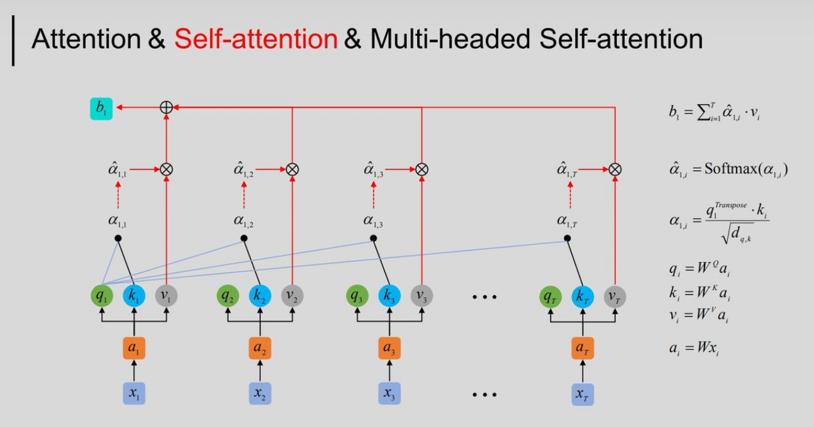

多头自注意力机制-MultiHead Self-Attention
在Transformer中的多头自注意力机制的讲解和代码实现。
Transformer自从被提出之后哦，已经成为NLP和CV领域中的核心架构，而其中的**多头自注意力机制（Multi-Head Self-Attention）**正是该架构被提出的核心锁在。
是否是成功的关键呢？有读到一个论文说其实注意力不是让这个架构有这么好的效果的主要因素，而是这个大的框架效果很好。
该论文被发表在2022年的cvpr，MetaFormer Is Actually What You Need for Vision
本文只会解析Transformer的多头注意力部分，从原理出发，并给出对应Pytorch代码。
1 自注意力机制（Self-Attention）
在Transformer架构中，开始计算多头自注意力的序列是已经经过了position embeding，融合了位置信息的输入。
Scaled Dot-Product Attention
$$
Attention(Q,K,V) = softmax(\frac{QK^T}{\sqrt{d_k}})V
$$
设输入一个序列：
$$
X = [x_1, x_2, …, x_n] \in \mathbb{R}^{n \times d}
$$
- $x_i$:输入序列（一个句子）的对应词的向量。
公式中的Q,K,V均是由矩阵的形式表示的，为了方便理解，我们先看单个$x_i$，观察注意力的计算过程：

这里，$x_i$在进行了position embeding后得到$a_i$，然后与QKV矩阵相乘得到$q_i$,$k_i$,$v_i$。
之后，每个词向量的q与自己和其他词的k进行相乘，得到$\alpha_i$。
下一步，按照比例缩小，也就是除以公式中的$\sqrt{d_k}$(Scaled的含义来源)，经过Softmax映射到（0,1）的区间之后，乘以$v_i$,再把每个结果求和，就是当前$x_i$的Attention计算结果。
${d_k}$:词经过QK线性映射后的向量维度。防止点积值过大而影响softmax。
使用QKV矩阵计算就可以充分利用GPU的并行运算，加快计算速度。
公式中的QKV可以如下理解：
- Query（查询）：$Q = XW^Q$
- Key（键）：$K = XW^K$
- Value（值）：$V = XW^V$
这样计算后的每个词都会包含所有词的位置信息（自己和上下文信息），成为新的向量。
2 多头注意力（Multi-Head Attention）
第一章节实现的注意力，相对于多头注意力而言，是单头注意力。
那多头注意力又是怎么来的，为什么要这么做呢？
一次注意力，可以抽象的理解为从一种视角去认识这个词，但这缺乏灵活性，如果我用别的视角理解这个词，这个词的含义或许就不一样了。
所以作为改进，单头是每个词做一组QKV，现在每个词进行多次不同的QKV进行计算，也就是多头注意力。
也就是下面的步骤：
第一步：为每个头生成自己的 Q、K、V
$$
Q_i = X W^Q_i,\quad K_i = X W^K_i,\quad V_i = X W^V_i
$$
其中：
- $W^Q_i, W^K_i, W^V_i \in \mathbb{R}^{d_{\text{model}} \times d_k}$
第二步：每个头计算注意力
$$
head_i = Attention(Q_i, K_i, V_i) = softmax \left( \frac{Q_i K_i^T}{\sqrt{d_k}} \right) V_i
$$
第三步：拼接所有头的输出
$$
Concat(head_1, \ldots, head_h) \in \mathbb{R}^{L \times (h \cdot d_v)}
$$
第四步：线性变换输出
$$
\text{MultiHead}(Q, K, V) = \text{Concat}(\text{head}_1, …, \text{head}_h) W^O
$$
其中：
- $W^O \in \mathbb{R}^{(h \cdot d_v) \times d_{\text{model}}}$
常用维度设定（默认每头相同维度）：
$$
d_k = d_v = \frac{d_{\text{model}}}{h}
$$
3 多头注意力机制代码
Generate by chatGPT
1 | import torch |
后续会补充labml.ai版的代码，带mask
给我帮助很大的网络材料：
补充Transformer的一个博客，Transformer的注解版：
The Annotated Transformer
多头自注意力机制-MultiHead Self-Attention
https://zhouwentong7.github.io/2025/04/15/多头自注意力机制-MultiHead-Self-Attention/